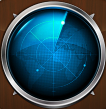
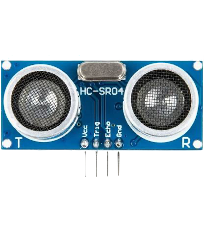
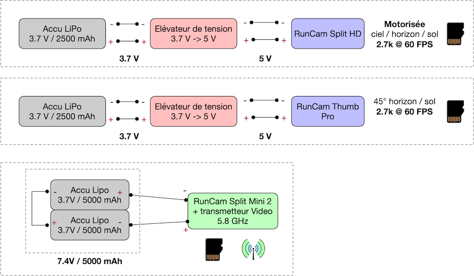
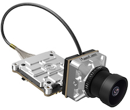
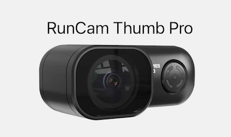
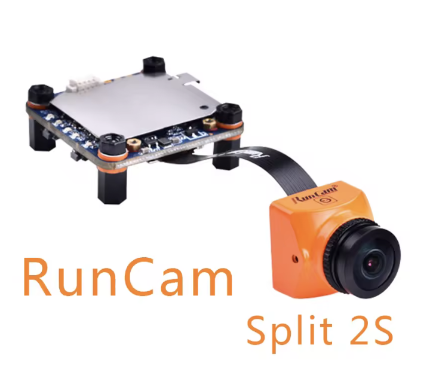

Projet 2025-2026 : La mouette
{kind=link}
{kind=link}
La mouette s'envolera le 21 mai 2026 à environ 11h de la cour de la cité scolaire Triboulet à Romans-sur-Isère.
Elle atterrira environ 3h plus tard aux environs de Montélimar, après avoir flotté dans la stratosphère et éclaté aux alentours de 30000m.
Suivre son vol via la balise du L0AD : 
Suivre son vol via la sonde radio-amateur :
Ce projet est mené en collaboration avec :
Sans Planète-Sciences et le CNES, ce projet n'aurait pas pu voir le jour.
Sommaire
- Participants et expérimentations
- Eléments techniques
- Partie mécanique
- Capteurs
- Partie embarquée
- Réception sol
- Intégration des éléments dans la nacelle
- Vol de la mouette (à venir)
- Résumé du vol
- Préparatifs
- Envol
- Suivi
- Télémesures
- Extraits des vidéos embarquées (décollage, flottement, éclatement, atterrissage)
- Presse, ... (à venir)
Le projet est mené par :
- Le Lycée Triboulet de Romans-sur Isère
-
Un groupe d'élèves de
- Le Collège de l'Europe de Bourg-de-Péage
- deux groupes d'élèves de quatrième et troisième, dans le cadre de leur enseignement en technologie et/ou de la préparation au BIA, ont étudié les aspects mécaniques du cahier des charges UBPE et ont conçu une nacelle (la boite embarquant les expériences).
- Le Département Informatique de l'IUT de Valence
- 1 étudiant de 2ème année de BUT Informatique, a participé à l'intégration et aux tests, a mis en place une transmission vidéo embarquée longue portée.
- Le L0AD (Laboratoire Ouvert Ardèche-Drôme)
- Quelques membres de ce hackerspace associatif ont intégré le système principal dans la nacelle, réalisé un système secondaire, réalisé une expérience tierce, assuré l'intégration des équipements de prise de vue, mis en place l'infrastructure de suivi, procédé aux tests de l'ensemble et participent à la récupération de la nacelle.
Ont également collaboré au projet :
- Le CSUG (Centre Spatial Universitaire de Grenoble)
- A travers une collaboration avec ANS Innovation, intégration d'une expérimentation LoRa-Mesh
Partie mécanique
La nacelle a été réalisée par les collégiens, après étude des matériaux, croquis, conception 3D et réalisation de différentes maquettes à échelle 1:2.
Outre le respect du cahier des charges UBPE, la contrainte a été de construire la nacelle autour d'un squelette carton/MDF fourni par le L0AD (à l'échelle 1:2 pour les prototypes). L'idée était de permettre de faciliter la qualification en pouvant exposer uniquement le squelette afin de voir et d'accéder sans peine aux différents éléments, puis de construire la nacelle autour du squelette une fois la qualification terminée. La nacelle est donc réalisée sous forme de 6 panneaux s'emboitant les uns avec les autres comme un puzzle. De plus, un panneau présente une fenètre au centre dans laquelle vient s'emboiter un micro-panneau fixés sur le squelette et contenant des capteurs.
Capteurs
Les lycéens ont choisi les mesures à effectuer pendant le vol :
- Température intérieure / extérieure
- Pression
- Hygrométrie
- Vitesse du son
- Luminosité
Les composants permettant de faire ces mesures ont été choisis par le L0AD, qui s'est appuyé sur les cartes électroniques (conçues lors des projets précédents) permettant le respect de la plage de valeurs mesurables et le branchement sur la carte kikiwi :
- Température : capteur LM135 (données techniques).
- Pression : capteur MPX5100DP (données techniques).
- Hygrométrie : capteur HiH50xx (données techniques).
- Mesure de temps de vol ultrasons : capteur HC-SR04 (données techniques).
- Luninosité : capteur BPW34
{kind=link}
{kind=link}
{kind=link}
{kind=link}
{kind=link}

Une carte d'adaptation a également été réalisée afin que les lycéens puissent brancher sur des alimentations/multimètres les cartes capteurs destinées à être embarquées dans la nacelle, afin de les étalonner.
{kind=link}
Les lycéens ont alors pu procéder à l'étalonnage et/ou la validation du fonctionnement des capteurs à l'aide d'appareils de référence.
Autres expériences
Les lycéens ont imaginé d'autres expériences ne nécéssitant pas de capteurs :
- Déterminer les changements d'aspect et de composition chimique ou cellulaire de différents échantillons (dragibus, cheveu, fleur et tige de primevères)
- Observation de l'augmentation du volume d'un ballon rempli d'air ambiant, observation du moment de l'éclatement
Partie embarquée
Le système principal fourni par le CNES (émetteur Kikiwi), a permis :
- de prendre des mesures analogiques sur 8 voies (capteurs alimentés en 3.3V)
- de transmettre (toutes les 2s) les mesures et la position (AFSK 1200 bits/s, sur 869.525 MHz, portée à plusieurs centaines de km)
- de stocker les mesures et la position sur une carte micro-SD
{kind=link}
Un schéma est présenté ci-dessus (cliquer pour voir l'image complète), avec les mesures embarquées :
- Température intérieure / extérieure
- Pression
- Hygrométrie
- Luminosité
L'ensemble est alimenté par 1 accu LiPo 7.4V 5000mAh, assurant une durée de fonctionnement théorique plus de 12h.
Le système secondaire réalisé initialement à l'IUT de Valence (étudiants, enseignants) et dont le développement a été poursuivi par les membres du L0AD, a permis :
- de prendre des mesures numériques (modules capteurs alimentés en 3.3V), toutes les 10 secondes
- de stocker les mesures, la position GPS et d'autres informations utiles sur une carte micro-SD
- de transmettre (toutes les 90 secondes) les mesures et la position (LoRaWan, SF9/868MHz)
{kind=link}
{kind=link}
Un schéma est présenté ci-dessus (cliquer pour voir l'image complète), avec les mesures embarquées :
- Température intérieure / extérieure (capteurs redondants différents)
- Pression
- Hygrométrie (capteurs redondants différents)
- Taux de CO2
L'ensemble est alimenté par un accumulateur LiPo 3.7V/2500mAh, assurant une durée de fonctionnement théorique de plus de 12h.
3 caméras autonomes (semblables à des GoPro) permettent de filmer :
- Le sol en plongée à 45°, en 2.7k à 60 images/s (RunCam Thumb Pro).
- Le sol, l'horizon et le ballon (notamment son augmentation de volume et son éclatement), en 2.7k à 60 images/s (RunCam Split-HD), via un servo-moteur commandé par le système secondaire en fonction de l'altitude.
- Le sol, via une caméra analogique de drone, les images étant transmises via un liaison 5.8 GHz longue portée).
   
{kind=link}
{kind=link}
{kind=link}
{kind=link}
Le dispositif de transmission vidéo analogique est alimenté en externe par un accumulateur LiPo 7.4V/5000mAh, assurant une durée de fonctionnement théorique de plus de 10h.
Partie sol
La nacelle peut communiquer avec le sol à l'aide de 3 dispositifs radio différents :
- L'émetteur Kikiwi du système principal, prété par Planète-Sciences et le CNES, émettant en modulation AFSK (1200-2200 Hz) sur 868 MHz.
- L'émetteur LoRaWan du système secondaire (L0adra-Tracker), émettant en modulation SF9/125kHz sur 868 MHz.
- Une radio-sonde type M10, prétée par les radio-amateurs Rhônalpins assurant la récupération, émettant sur 435 MHz.
{kind=link}
{kind=link}
Un schéma est présenté ci-dessus (cliquer pour voir l'image complète), avec les différentes solutions de suivi :
- Les trames émises par le système principal peuvent être reçues localement sur le site de lacher, à l'aide de la baie de réception UHF Planète-Sciences. Le logiciel associé, KikiwiSoft, permet de décoder les trames pour extraire les données brutes, tracer les courbes de mesure et visualiser la trajectoire du ballon.
- Les trames émises par le système secondaire sont diffusées sur le réseau communautaireThe Things Network et le réseau universitaire CampusIoT. Elles peuvent alors être observées directement via les interfaces web clientes de l'infrastructure TTN, être récupérées via MQTT pour être visualisées a postériori. Un tableau de bord a également été réalisé sur TagoIo afin de pouvoir visualiser les mesures instantanées, les courbes et la trajectoire du ballon. Une voiture de poursuite est équipée d'une station de réception mobile LoRaWan pour participer au relai des données.
- Les trames émises par la radio-sonde sont relayées par des stations radio-amateurs (fixes ou mobiles) vers un serveur web qui permet d'observer à distance la trajectoire du ballon via le site SondeHub.